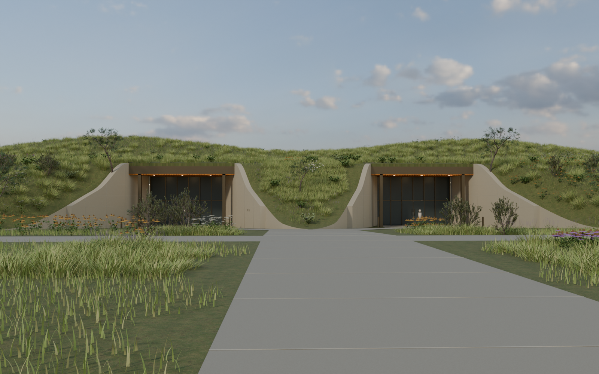
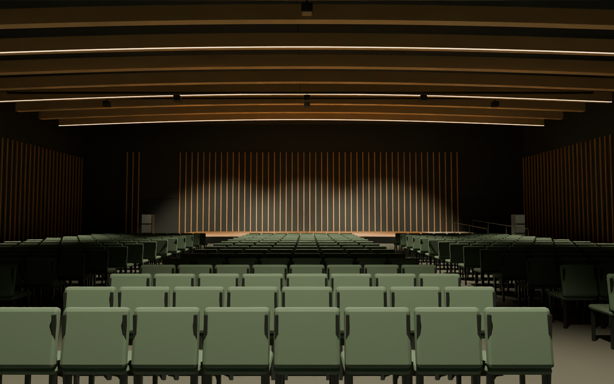
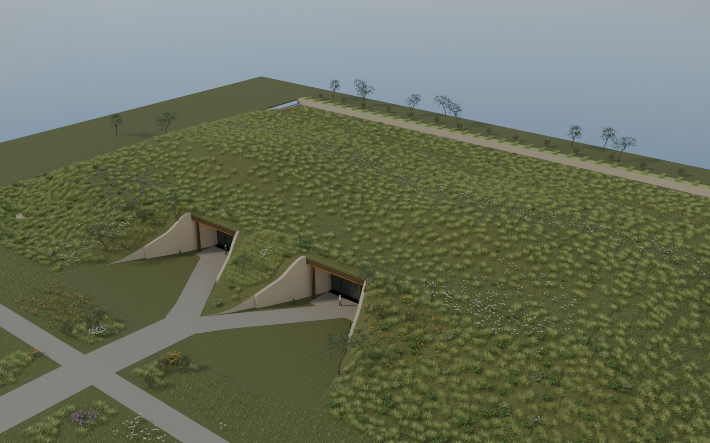

Buildings shaped around the landscape.
A hillside approach for the proposed data-center shells, alongside a new performance-hall interior. These views are rendered from the current 3D models.


The landscape becomes
the roof.
Two modeled shells develop the architectural direction for the proposed six-shell expansion. Recessed entrances, curved walls and meadow planting give the buildings a low profile. Both shells include a modeled interior that can be explored.
A room for performance
and gathering.
A low performance platform, movable seating and warm timber ceiling elements establish the room's character. The wider model includes a foyer opening toward a garden terrace.


Two volumes.
One planted landscape.
The elevated view shows the relationship between the two entrances and the planted roof forms. This is an isolated building study; the final six-shell layout and its connection to the campus are the next design work.


From design study to coordinated proposal.
Next, confirm the expansion site and develop the six-shell placement, rear elevations and service access. The planted roof, drainage and building systems need engineering coordination; the hall layout and occupancy also need review.